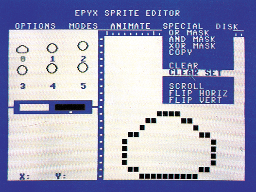
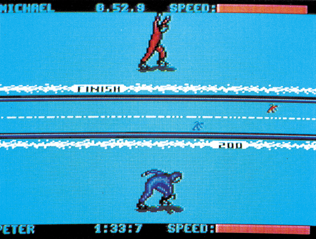
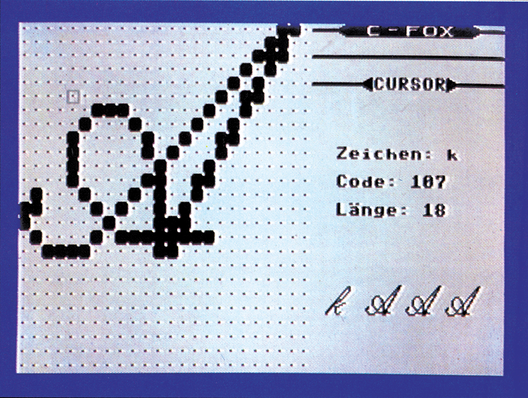
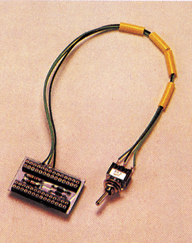
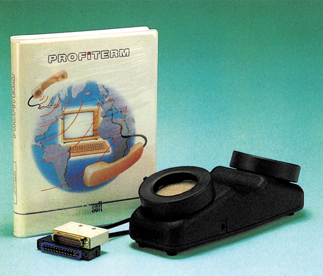
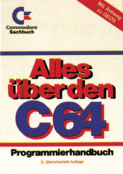
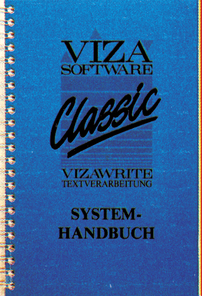

Aktuelles
Neue Utilities von Epyx
Der bekannte amerikanische Spieleproduzent Epyx bringt in Deutschland drei Utilities auf den Markt.
Das erste ist die »Fast Load Cartridge«. Mit diesem Modul lassen sich fast alle Programme bis zu fünfmal schneller laden. Außerdem sind einige Hilfsprogramme und ein Maschinensprache-Monitor integriert.
Ebenfalls diskettenorientiert ist das »Vorpal Utility Kit«. Durch Umkopieren auf das Vorpal-Format können Programme ohne zusätzliche Hardware bis zu 25mal schneller geladen werden. Außerdem sind auf der Programmdiskette eine Vielzahl von anderen Disketten-Utilities enthalten, wie Kopierprogramme, Directory-Sorter und ähnliches.
Dritter im Bunde ist das »Basic Programmers Toolkit«. Es ist im großen und ganzen eine Neuauflage des »Graphics Basic« von HesWare. Einige neue Befehle sind hinzugekommen, ebenso wie ein Sprite- und ein Zeichensatz'/Hintergrund-Editor. Beide Editoren wurden übrigens von den Epyx-Autoren verwendet, um Spiele wie »Summer Games II« oder »Movie Monster« zu programmieren. Unser Bild zeigt den Sprite-Editor.

Alle drei Produkte sind ab sofort erhältlich und kosten 59 Mark.
(bs)Info: Epyx Deutschland, An der Gümpgesbrücke 24, 4044 Kaarst 2
Einheitliche PAD-Zugangsgebühren
Bald ist es soweit. Ab 1.4.1987 sollen die Datex-P20-PADs von jedem Telefon aus zu gleichen Telefongebühren erreichbar sein. Leider nicht zum Ortstakt wie Datex-P, was sehr kundenfreundlich gewesen wäre. So werden 50 Sekunden eine Einheit (23 Pfennige) kosten. Während der Nachtzeit kosten 75 Sekunden eine Einheit. Viele Datenverbindungen werden also billiger, wenn man dann auf Datex-P verzichtet und die Gegenstelle direkt anruft; vor allem wenn es sich um Ortsgespräche handelt. Auch Nahbereichsverbindungen (45 Sekunden pro Einheit, Normaltarif) können bei entsprechenden Datenmengen billiger als Datex-P werden.
(hm)Die 1541 im neuen Kleid
Seit kurzer Zeit gibt es von Commodore eine neue Version der Floppy 1541. Sie ist optisch an den neuen C 64c angepaßt und weist mehrere Änderungen gegenüber der »alten« 1541 auf. Die 154l-Floppy hat jetzt eine neue Platine bekommen. Durch die geänderte Hardware und das abgewandelte DOS verfügt die »neue« 1541 jetzt über eine Anlaufsteuerung zum Zentrieren der Diskette und über eine Lichtschranke, die das Anschlagen des Schreib/Lesekopfes verhindern soll. Wegen diesen Änderungen gibt es bei der neuen 1541 Kompatibilitätsprobleme; mit Floppy-Speedern (nicht bei der Software). Besonders bei Parallel-Speedern treten Probleme auf, da sie in der Regel nicht auf der neuen Platine eingebaut werden können. Zu erkennen ist das neue Laufwerk am schon erwähnten Anlaufen des Motors beim Einlegen einer Diskette. Wir werden in der nächsten Ausgabe noch ausführlich über das neue Gerät berichten.
(ks)Vizawrite 64 billiger
Ab sofort ist die Diskettenversion von Vizawrite 64 mit deutschem Zeichensatz zum Preis von 198 Mark erhältlich.
Der deutsche Distributor, sucht weiterhin alle, auch die beim ehemaligen Distributor Interface Age registrierten, Anwender von Viza-Software zur Aufnahme in eine neue Registraturkartei. Durch Einsendung einer Kopie des Kaufbeleges kann man sich in diese Kartei eintragen lassen.
Die beim deutschen Distributor registrierten Anwender bekommen regelmäßige Informationen über Produktneuheiten und Verbesserungen, sowie einen kostenlosen Softwareservi‚ce und den Update ihrer Programme. Wem Originalprogramme immer noch zu teuer sind, aber auch keine Raubkopien kaufen möchte, hat jetzt die Möglichkeit, Viza-Software als »Second Hand«Programme zu erwerben. Zum Preis von unter 100 Mark erhält man zum Beispiel ein überprüftes Vizawrite 64 mit Handbuch.
(aw)DTM, Bornhofenweg 5, 6200 Wiesbaden, Tel. 06121/407989
Nachtrag zur Marktübersicht Lernsoftware
Folgende Bezugsadressen fehlten bei der Marktübersicht auf Seite 36, Ausgabe 8/86.
MVG: Moderne Verlagsgesellschaft,
Justus-von-Liebig-Str. 1,
8910 Landsberg
NEU: Jens Neubert
Weißenburgstr. 14
2300 Kiel
DÜM: Dümmler Verlag
Kaiserstr. 31-37
5300 Bonn
Hal: Haller Verlag
Fuggerstr. 7
5000 Köln 90
Super-Spiel für C 16
Kingsoft bringt mit der »Winter-Olympiade« ein hervorragendes Spiel für den C 16 auf den Markt. Einige Disziplinen sind dabei technisch ausgefeilter als beim großen Vorbild »Winter Games«. Unser Bild zeigt den Eisschnellauf, eine von insgesamt sechs Disziplinen. Andere Sportarten sind Bobfahren, Skispringen oder Abfahrtslauf. Bei einem Preis von 29 Mark auf Kassette oder Diskette kann man die »Winter Olympiade« jedem C 16- und Plus/4-Besitzer empfehlen.

Kingsoft, Schnakebusch 4, 5106 Roetgen
Zusatz-Programm für Printfox
Zum Zeitungsprogramm »Printfox« (Test in der 64'er, Ausgabe 5/86) ist jetzt die erste Diskette mit Erweiterungen für das Druckprogramm erschienen. So findet man neben 20 neuen Zeichensätzen auch einen Zeichensatzeditor namens »Charakterfox« (siehe auch Bild oben). Dieser Editor besticht durch hohe Geschwindigkeit und eine Vielzahl von Funktionen. Darunter befindet sich die Möglichkeit, Befehlsmakros zu definieren. Effekte wie Outline, Shadow oder 3D sind damit sehr einfach herzustellen.

Weiterhin werden einige Zusatzprogramme mitgeliefert wie beispielsweise ein Textkonverter, der Texte von gängigen Textverarbeitungen wie Vizawrite und Textomat einlesen kann und ein Tastaturbelegungs-Editor. Der Preis für das Erweiterungspaket soll etwa 79 Mark betragen.
(bs)Scanntronik, Parkstr. 10, 8011 Zorneding
64 KByte für den C 16
Ein Modul, das den C 16 auf insgesamt 64 KByte ausbaut, wird jetzt von Dela Elektronik angeboten. Eine Platine von ungefähr Streichholzschachtelgröße wird einfach in den Expansion-Port gesteckt.
Damit erhält man ohne weitere Umbauten mehr als 60000 Byte frei für Basic-Programme. Der Preis für das Modul beträgt 89 Mark.
(kn)Dela Elektronik, Maastrichter Str. 23, 5000 Köln 1, Tel. 0221/5817081
Quickshot II in neuer Version
Die, laut Angabe des Distributors, weltweit erfolgreichste Joystick-Familie, die Quickshots, hat Zuwachs erhalten. Für 34,95 Mark gibt es den Quickshot II Turbo, einen Joystick mit Mikro-Schaltern und automatischem Dauerfeuer. Damit soll schnelle Reaktion und hohe Zuverlässigkeit gewährleistet sein. Der Quickshot II Turbo soll die schon auf dem Markt befindlichen Modelle ergänzen
(bs)Bernd Jöllenbeck GmbH, Postfach, 2730 Weertzen
Betriebssystem-Umschaltung
Ab sofort können auch die Besitzer von C 128-Computern verschiedene Betriebssysteme im C 64-Modus nutzen. Die Umschaltplatine der Firma Dela Elektronik soll es ermöglichen, trotz des Platzproblems im C 128 drei Betriebssysteme unterzubringen und absturzfrei umzuschalten. Ein 27256-Eprom soll den Basic-Interpreter und drei Betriebssysteme beherbergen. Der Einbau soll problemlos und ohne Lötarbeiten zu vollziehen sein. Der Preis: 30 Mark.

Dela Elektronik, Maastrichter Str. 23, 5000 Köln 1, Tel. 0221/81 7081
Thorn Emi gibt auf
Thorn Emi gab bekannt, daß die Thorn Emi Computer Software GmbH geschlossen wird. Die Firma verkaufte Entertainment- und Business-Software für Heimcomputer und PCs. Als Grund wurde genannt, daß trotz starken Wachstum des Marktes nur Produkte von Dritten verkauft wurden, also reine Distribution betrieben wurde, ohne positiven Effekt auf die eigenen Thorn Emi Software-Produkte.
(bs)Wiesemann 92006-Interface verbessert
Das in der Ausgabe 2/86 getestete Druckerinterface (seriell IEC nach Centronics) für den C 64 und C 128 wurde in zwei wesentlichen Punkten verbessert. Zum einen sichert der Hersteller nun die komplette Funktionsfähigkeit mit dem SpeedDos-Betriebssystem zu. Weiterhin wurde das 92000G-Interface an das neue Geos-Betriebssystem angepaßt und soll auch damit einwandfrei zusammenarbeiten. Ältere Interfaces dieses Typs können für 50 Mark in die neue Version umgerüstet werden.
(aw)Wiesemann, Winchenbachstr. 3-5, 8600 Wuppertal 2, Tel. 0202/505077
Alles über den C 16
Mit diesem Titel ist ein brandneues Buch aus der Commodore-Sachbuchreihe überschrieben. Es ist ein Lern- und Nachschlagewerk für C 186/116-Besitzer . Wichtiger Bestandteil ist ein Basic-Kurs mit vielen Beispielen. Zusätzlich werden Sie in die strukturierte Progammierung, Datenverwaltung und in die Grafikprogrammierung eingewiesen. Nützliche Tips und Tricks sind ebenfalls enthalten. Das Buch kostet 39 Mark und wird von Markt & Technik herausgegeben.
(kn)Markt&Technik Verlag AG, Hans-Pinsel-Str.
2, 8013 Haar bei München, Tel. 089/4613-0, ISBN 3-89090-385-1
System mit 1200/75-bit/s
GVM bietet ein komplettes 1200/75-bit/s-DFU-Paket, den ‚Teleprofi 2000«, für den C 64 an. Es besteht aus dem Akustikkoppler AK 20005 (mit FTZ-Nummer und Netzteil), dem Programm Profiterm von Ariolasoft und einer RS232-Schnittstelle. Beim Koppler können eingestellt werden: 300 bit/s Vollduplex und 1200/75 oder 75/1200 bit/s Splitspeed. Der Vorteil von 1200/75 bit/s liegt darin, Daten mit 1200 bit/s zu empfangen und mit 75 bit/s zusenden. Kommuniziert man mit einer Mailbox, wird man von dort wesentlich mehr Daten bekommen als man abschickt. Deshalb ist es sinnvoll, die Empfangsleitung auf Kosten der Sendeleitung schneller zumachen. Wichtig ist dabei allerdings, daß die Mailbox mit 1200/75 bit/s arbeiten können muß, was aber die wenigsten tun. So empfiehlt sich das System hauptsächlich für Datex-P-Verbindungen. 1200/1200 bit/s wären noch besser, aber leider gibt es noch keinen zugelassenen Akustikkoppler für diese Geschwindigkeit.

GVM, Höhenstr. 74b, 4000 Düsseldorf, Tel. 0211/7176577, Preis: 548 Mark
Neue CP/M-Software für den C 128: Microsoft Basic
Mit Microsoft Basic bekommt der C 128-Anwender unter CP/M ein sehr leistungsfähiges Kompaktsystem zum Programmieren in Basic. Der komfortable Befehlssatz läßt kaum Wünsche offen. Besonderes Augenmerk dürfte auf die Kombination Interpreter — Compiler zu richten sein. Die Programmerstellung und Testphase kann interaktiv mit dem Interpreter stattfinden. Danach ist es möglich, die Programme mit dem Compiler in den weitaus schnelleren Maschinen-Code zu übersetzen. Der Lieferumfang erstreckt sich vom Microsoft-Interpreter über Compiler Makro-Assembler, Linking Loader und Cross-Reference bis hin zum Library-Manager. Das ausführliche Handbuch umfaßt sowohl eine deutsche als auch englischsprachige Systembeschreibung.
(bj)Markt&Technik Verlag AG, Hans-Pinsel-Str.
2, 8013 Haar bei München, Preis: 198 Mark, Tel: 089-46 13-0
Marktübersicht Lernsoftware
Das Rechtschreibtraining für die 5. bis 9. Klasse wird von Jens Neubert, Weißenburgstr. 14, 2300 Kiel, vertrieben. Die CNC/Simulation — Programm Drehen wird von Westermann, Postfach 5520, 3300 Braunschweig, angeboten. Alle Produkte die in der Rubrik Sprachen mit dem Softlearning Systembasis»S«betrieben werden, sind auch bei der Firma SM-Soft-Training GmbH, 8000 München 83, Fasangartenstraße 4, erhältlich.
Nachhall zu Forschung und Technik
In Ihrer Juliausgabe berichten Sie auf Seite 20 und 21 über unser Institut. Richtig ist, daß wir uns seit Jahren für eine lebenswerte Umwelt einsetzen. Um so mehr waren wir verwundert, daß Ihr Layouter/in in den Artikel hinein einige Computergrafiken eines der größten Rüstungskonzerne der Bundesrepublik, der Firma MBB, hineingeklebt hat. Wir werden hier mit einer Institution assoziiert, die inhaltlich das genaue Gegenteil von dem vertritt, was wir fordern. Einige Leseranfragen an unser Institut bestätigen diesen Eindruck. Wir distanzieren uns von der Art der Darstellung, die wir beinahe als bösartig empfinden und betonen, daß wir mit der Firma MBB jetzt und in Zukunft keinerlei Kontakte haben.
Alles über den C 64
Unter diesem Titel erscheint die Neuauflage der deutschen Übersetzung des » Commodore 64 Programmers Reference Guide«. Das über 500 Seiten starke Buch wurde komplett überarbeitet und wesentlich erweitert. So beschäftigt sich ein eigener Anhang mit dem neuen Betriebssystem »Geos« Andere Kapitel stellen Themengebiete wie Maschinensprache oder Grafik- und Soundprogrammierung verständlich dar. Für Techniker liegt ein ausführlicher, DIN-A3-großer Schaltplan bei.

Das Buch gehört zu den ersten, der ab sofort bei Markt&Technik erscheinenden, offiziellen Commodore-Sachbuchreihe und kostet 59 Mark. Es ist im Fach- und Buchhandel erhältlich.
(bs)Markt&Technik Verlag AG, Hans-Pinsel-Str. 2, 8013 Haar bei München, Tel: 089-46 13-0
Vizawrite Classic in Deutsch
Die Textverarbeitung Vizawrite Classic für den C 128, die bereits seit Februar in der englischen Version zum Preis von 348 Mark ausgeliefert wird, ist nun auch in einer deutschen Version erhältlich. Sämtliche registrierten Anwender erhalten das deutsche Handbuch sowie die Diskette kostenfrei ausgetauscht. Wer bereits Besitzer von Vizawrite für den C 64 ist, kann sein Programm beim Kauf von Vizawrite Classic mit 50 Mark anrechnen lassen.

DTM, Bornhofenweg 5, 6200 Wiesbaden